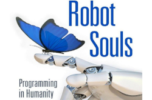
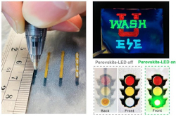
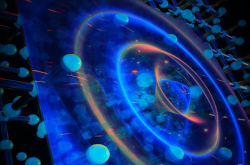
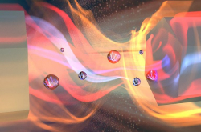
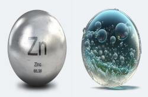

Últimas notícias  Inovação técnologica Devemos programar uma alma humana na inteligência artificial, propõe pesquisadora 11/08/2023 A sociedade moderna já depende intrinsecamente dos sistemas automatizados e, cada vez mais, da inteligência artificial. Essas ferramentas já estão incorporadas em nossas rotinas diárias e não mostram sinais de desaceleração - na verdade, o uso da assistência robótica e automatizada é cada vez maior.  Inovação técnologica Caneta comum com tinta especial desenha LEDs totalmente funcionais 10/08/2023 Uma simples caneta esferográfica consegue "escrever LEDs" personalizados diretamente no papel: Você desenha e, em vez de ter algo escrito, você tem um LED totalmente funcional, pronto para ser aceso.  Inovação técnologica Descoberta partícula demônio que pode explicar supercondutividade 10/08/2023 Em 1956, o físico teórico David Pines [1924-2018] previu que os elétrons em um sólido poderiam fazer algo estranho: Embora eles normalmente tenham uma massa e uma carga elétrica, em determinadas situações eles poderiam se combinar, formando uma partícula composta sem massa, neutra e que não interage com a luz.  Inovação técnologica O som pode ser transmitido através do vácuo 10/08/2023 Há três anos, um experimento mudou para sempre os livros didáticos ao mostrar que o calor pode se mover pelo vácuo, atualizando um saber científico secular. Agora, outra equipe está exigindo uma nova revisão dos livros de física ao demonstrar que o som também pode ser transmitido através do vácuo.  Inovação técnologica Baterias de zinco guardam eletricidade e produzem hidrogênio 09/08/2023 Engenheiros alemães estão desenvolvendo baterias de zinco que não apenas armazenam energia elétrica, mas também produzem hidrogênio. Os primeiros testes indicam uma eficiência de 50% no armazenamento de eletricidade e 80% na produção de hidrogênio, com uma expectativa de vida útil estimada em dez anos. Mais notícias...